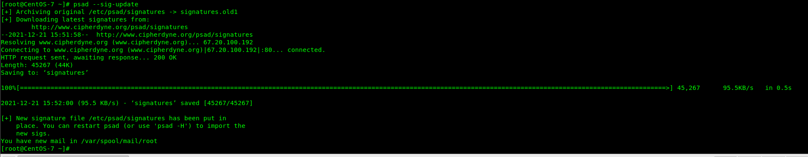

# 楔子
Linux 防火墙实验报告
# 实验目的
1. 掌握 Psad 是如何通过解析 iptables 日志信息来进行签名匹配；
2. 掌握 psad 签名更新、查看 psad 的状态输出、取证和详细 / 调试模式。
# 实验内容
Psad 的高级主题：从签名匹配到操作系统指纹识别；
# 实验环境
Centos 7
kali
# 实验步骤
1、在目标主机上执行下面操作：
psad - -sig-update

2、构造端口为 0 流量：也可以自己构造其他攻击
在扫描者主机执行下面操作hping3 -p 0 192.168.252.136 或者 hping3 -S -t 0 -p 0 192.168.252.136
3、检测 TCP 端口 0 流量，查看 psad 的状态输出
在目标主机上执行下面操作：psad –S
4、查看电子邮件警报
在目标主机上执行下面操作：cat /var/spool/mail/root 或者在你的电子邮箱里查看
5、在目标主机上执行下面操作：psad –A
psad --debug